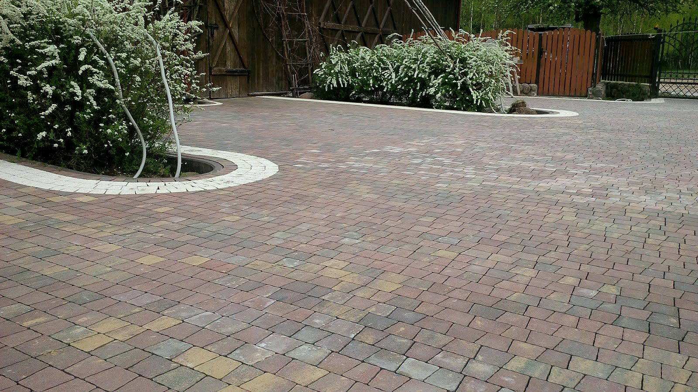

Przyjazd i wycena bez opłatŁowicz i okolice
Podjazdy i tarasyz kostki brukowej.Od podbudowy.
Brukarze z Łowicza. Zaczynamy od koryta, spadków i zagęszczonej podbudowy, bo to one trzymają nawierzchnię. Kostka na wierzchu to ostatni etap.
Czym się zajmujemy
Od ścieżkipo parking.
Po to dzwonią do nas najczęściej. Na zdjęciach nasze realizacje i przykłady nawierzchni, jakie układamy.
Pełna oferta

Kto przyjedzie
Ekipa z Łowicza.Od koryta po fugę.
Pracujemy głównie przy domach jednorodzinnych: podjazdy z wyspami zieleni, tarasy dookoła domu, dojazdy do bramy i większe place. Bazę mamy w Łowiczu, przy ul. płk. Stanisława Skarżyńskiego 25.
Najwięcej pracy jest pod spodem: koryto, podbudowa i zagęszczanie warstwa po warstwie. Dlatego cenę podajemy dopiero po pomiarze, a w trakcie prac ona już nie rośnie.
Jak pracujemy
Wiesz, na czym stoisz.Na każdym etapie.
-
01 / 04
Dzwonisz
Telefon albo zdjęcia terenu. Po krótkiej rozmowie wiesz, czy podejmiemy się zlecenia i kiedy możemy być na pomiarze.
-
02 / 04
Pomiar i wycena
Na miejscu mierzymy teren i sprawdzamy grunt. Dostajesz jedną cenę za całość: materiał, pracę i wywóz ziemi z koryta.
-
03 / 04
Układanie
Wchodzimy w umówionym terminie i robimy swoje do końca. Nie znikamy w połowie na inną budowę.
-
04 / 04
Odbiór
Przechodzimy razem po całej nawierzchni. Coś Ci nie gra? Poprawiamy, zanim się rozliczymy.
Realizacje
Ułożonei odebrane.
Zdjęcia z naszych budów. Więcej kadrów w galerii.
Wszystkie realizacje
Oferta
Pełny zakresprac brukarskich.
Szczegóły każdej usługi są w ofercie. Po krótkiej rozmowie przez telefon umówimy pomiar.
Podjazdy i dojazdy
Stary podjazd siada, kostka klawiszuje, po deszczu stoi kałuża? Rozbieramy, poprawiamy podbudowę i układamy od nowa.
Tarasy i ścieżki
Kostka, płyty tarasowe czy granit. Pokażemy, jak dany materiał znosi słońce, mróz i mech.
Place i parkingi
Auta dostawcze wymagają głębszego koryta i mocniejszego zagęszczenia niż ścieżka w ogrodzie.
Palisady, obrzeża i schody
Obrzeża osadzamy na betonie, bo bez tego kostka z czasem rozchodzi się na boki.
Odwodnienia liniowe
Planujemy je razem z nawierzchnią. Korytka siedzą równo z kostką i nie ma progów.
Podbudowa i korytowanie
Piasek odprowadza wodę, glina trzyma ją pod nawierzchnią. Pod grunt dobieramy głębokość koryta.
Opinie
Co pisząklienci.
Fachowa obsługa.
Obszar działania
Dojeżdżamydo Ciebie.
Bazę mamy w Łowiczu, przy ul. płk. Stanisława Skarżyńskiego 25. Nie wiesz, czy dojedziemy? Podaj adres przez telefon. Jak nie dojeżdżamy, powiemy od razu i nie zajmiemy Ci dnia.
- Łowicz
- okoliczne miejscowości
Częste pytania
Dobrzewiedzieć.
Nie ma tu Twojego pytania? Przez telefon odpowiemy od ręki.
Ile kosztuje ułożenie kostki?
Zależy od terenu i materiału. Inna cena wychodzi na piasku, inna tam, gdzie trzeba głębiej korytować i wywozić ziemię. Dlatego cenę podajemy po pomiarze, a w trakcie prac ona już nie rośnie.
Czy wycena jest płatna?
Nie. Za przyjazd i pomiar w Łowiczu i najbliższej okolicy nie płacisz. Decyzję podejmujesz po poznaniu ceny, nie przed.
Kostka z materiałem czy sama robocizna?
Oba układy są w porządku. Z materiałem od nas masz jedną cenę i jednego odpowiedzialnego za całość. Powierzony materiał najpierw obejrzymy, bo nie każda kostka nadaje się pod auto.
Jak długo trwa ułożenie nawierzchni?
Zależy od powierzchni i od tego, ile jest korytowania. Termin od wejścia do odbioru podajemy przy wycenie. Ulewa potrafi przesunąć zagęszczanie o dzień, wtedy mówimy o tym od razu.
Co z ziemią z koryta i starą nawierzchnią?
Wywóz jest w wycenie, więc po skończonej pracy nie zostaje Ci hałda ziemi ani sterta starego betonu. Chcesz zatrzymać ziemię na podniesienie ogrodu? Powiedz przy pomiarze, zostawimy ją tam, gdzie wskażesz.
Co, jeśli kostka się zapadnie?
Dobrze zagęszczona podbudowa nie siada, ale jak coś się ruszy, wracamy i poprawiamy. Z naszej winy robimy to za darmo. Jeśli wjechało tam coś dużo cięższego, niż ustalaliśmy, mówimy wprost, co i za ile.
Kontakt
Podjazd, taras czy plac?Jeden telefon.
Opisz, co chcesz zrobić. Umówimy pomiar, a po nim dostaniesz jedną cenę za całość.
+48 537 720 373